사용설명서
노래와 가사를 넣으면, 노래 부르는 때에 딱 맞춰 나오는 자막을 만들어 드립니다. 이 설명서는 처음 설치부터 다 만든 자막을 쓰는 데까지 한 단계씩 안내합니다.
사진 속 빨간 동그라미가 누를 곳입니다. 사진이 작으면 사진을 누르면 크게 보입니다.
1장
노래 파일(MP3)과 가사를 넣으면, 프로그램이 노래를 듣고 가사 한 줄 한 줄이 언제 나오고 언제 사라질지 시간을 맞춰 줍니다. 그렇게 만든 것이 자막 파일입니다.
첫사랑.mp3 와 첫사랑.txt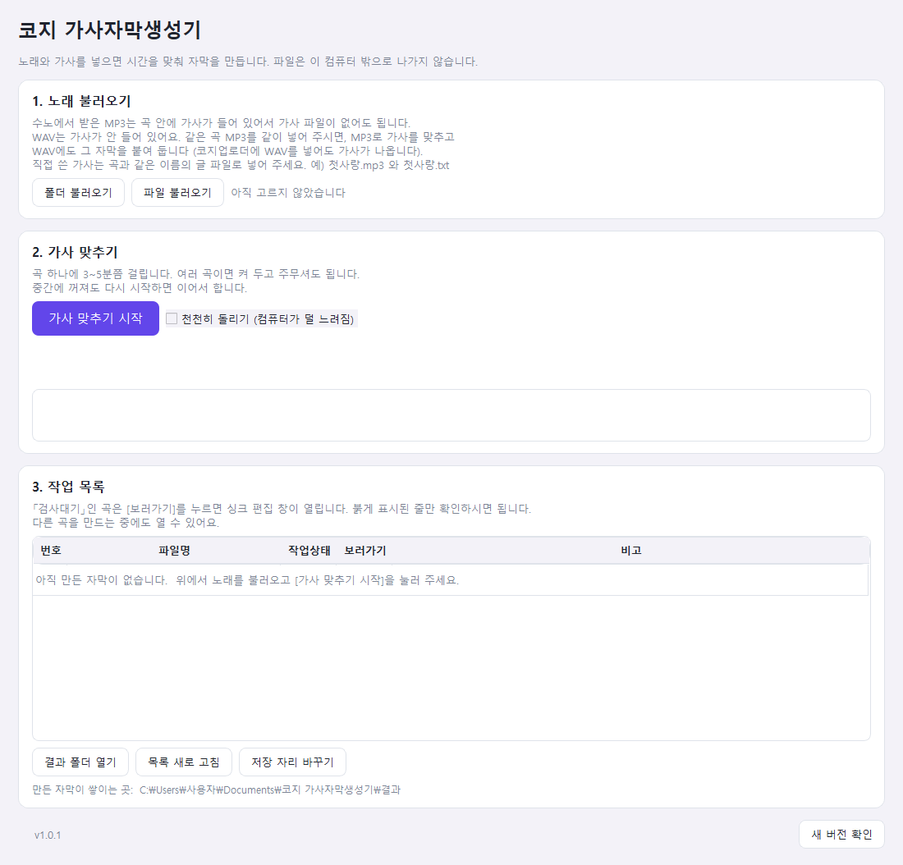
2장
설치 파일 받는 곳: 코지 가사자막생성기 설치파일 받기 (누르면 바로 받아집니다)
위 링크를 눌러 설치 파일을 내려받습니다.
내려받은 설치 파일을 두 번 누릅니다.
파란 창 「Windows의 PC 보호」가 뜨면, 창 가운데의 작은 글씨 추가 정보 를 누릅니다.
Microsoft Defender SmartScreen에서 인식할 수 없는 앱의 시작을 차단했습니다. 이 앱을 실행하면 PC가 위험에 노출될 수 있습니다.
추가 정보그림입니다. 실제 창과 글자 모양이 조금 다를 수 있습니다.
아래에 실행 단추가 새로 나타납니다. 그것을 누릅니다.
설치 창이 열리면 다음 을 눌러 넘어가다가, 설치 를 누릅니다.
다 깔리면 마침 을 누릅니다. 프로그램이 저절로 켜집니다.
파란 창이 떠도 걱정하지 않으셔도 됩니다. 작은 회사에서 만든 프로그램이라 윈도우가 처음 보는 프로그램이라고 알려 주는 것입니다. 바이러스가 있다는 뜻이 아닙니다.
바탕화면과 시작 메뉴에 「코지가사자막생성기」 바로가기가 생깁니다. 다음부터는 그것을 두 번 눌러 켜시면 됩니다.
3장
처음 켜면 「정품 인증」 창이 먼저 뜹니다. 메일로 받으신 키를 넣는 곳입니다. 키는 KIT- 로 시작하는 글자입니다. (예: KIT-XXXX-XXXX-XXXX)
메일에 있는 키를 그대로 복사해서 ① 가운데 하얀 칸에 붙여 넣습니다. (직접 치셔도 됩니다. 대문자·소문자는 상관없습니다.)
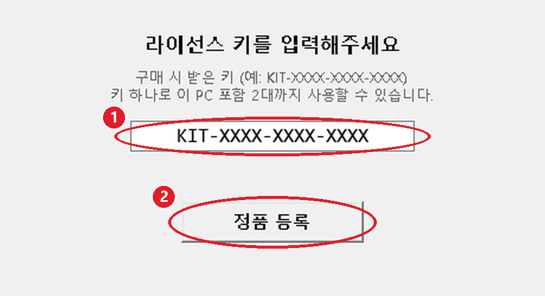
② 정품 등록 을 누릅니다.
잠깐 뒤 창이 저절로 닫히고 프로그램이 열립니다. 여기까지 되면 성공입니다.
인터넷이 연결되어 있어야 합니다. 키가 맞는지 인터넷으로 확인하기 때문입니다. 「서버에 연결할 수 없습니다」가 나오면 인터넷을 확인하고 다시 눌러 주세요.
키는 한 번만 넣으면 됩니다. 다음부터는 이 창이 안 뜨고 바로 켜집니다.
4장
노래를 넣고 단추 하나만 누르면 됩니다. 한 곡이든 여러 곡이든 같습니다.
맨 위 1. 노래 불러오기 칸에서 단추를 하나 고릅니다.
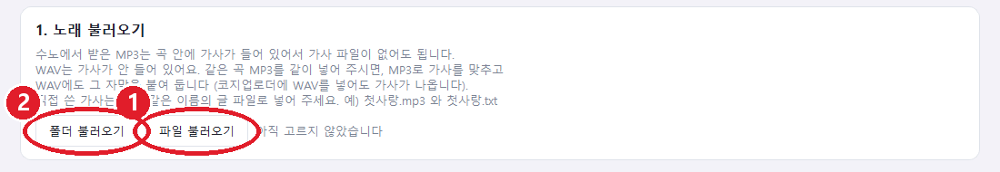
창이 열리면 노래 파일(또는 폴더)을 고르고 열기 (폴더는 폴더 선택) 을 누릅니다. 파일은 여러 개를 한꺼번에 골라도 됩니다.
아래 3. 작업 목록에 노래 이름이 올라오고 「대기」라고 나오면 잘 들어간 것입니다.
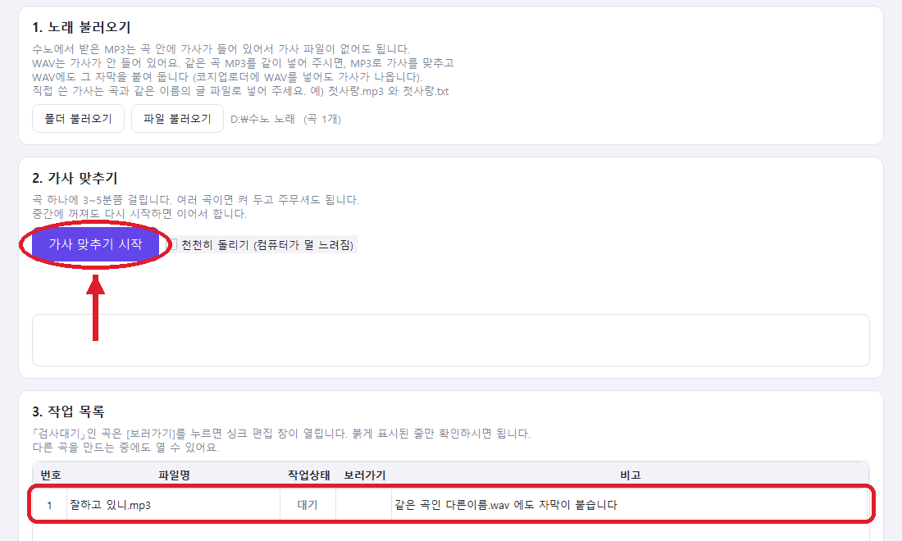
보라색 가사 맞추기 시작 을 누릅니다. (바로 위 사진의 화살표 자리입니다.)
처음 한 번은 「한 가지만 알려 드릴게요」 창이 뜹니다. 알겠어요, 계속할게요 를 누릅니다.
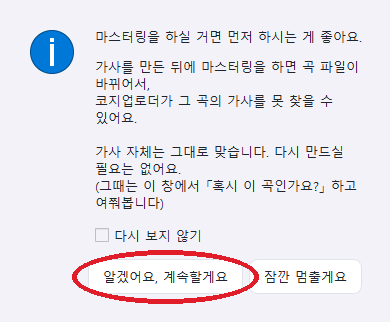
이 창은 「마스터링(음질 다듬기)을 하실 거면 자막보다 먼저 하세요」라는 안내입니다. 「다시 보지 않기」에 표시하면 다음부터 안 뜹니다.
이제 기다리시면 됩니다. 지금 무엇을 하는지, 얼마나 남았는지 글씨와 막대로 보여 줍니다.
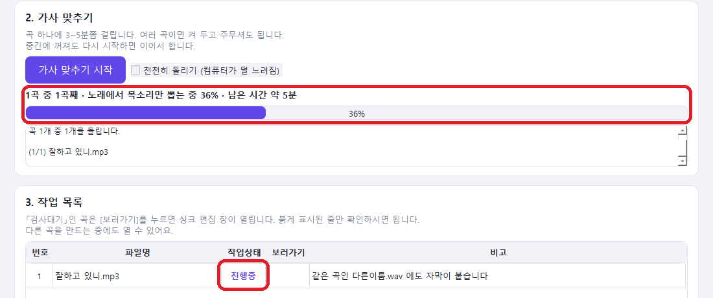
다 끝나면 작업 목록의 그 노래가 「검사대기」로 바뀌고 보러가기 단추가 생깁니다. 자막은 이미 다 만들어졌습니다.
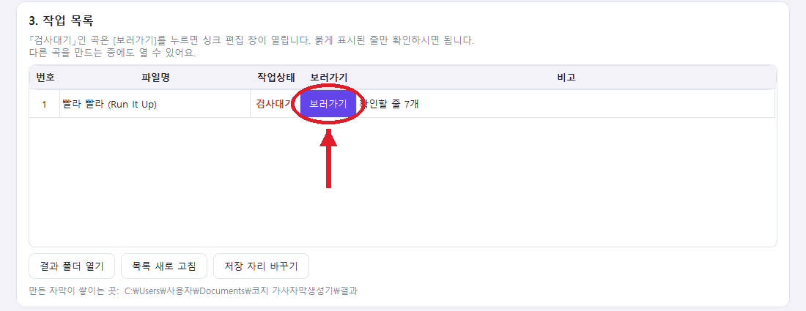
곡 하나에 보통 3~5분쯤 걸립니다. 여러 곡을 넣으셨으면 컴퓨터를 켜 두고 다른 일을 하시거나 주무셔도 됩니다.
중간에 꺼져도 괜찮습니다. 다시 켜서 같은 노래를 불러오고 가사 맞추기 시작 을 누르면 끝난 곡은 건너뛰고 이어서 합니다.
작업하는 동안 컴퓨터가 많이 느려지면, 시작하기 전에 「천천히 돌리기 (컴퓨터가 덜 느려짐)」에 표시해 두세요. 대신 시간이 조금 더 걸립니다.
처음 한 번은 더 오래 걸립니다. 맨 처음 자막을 만들 때 프로그램이 노래 듣는 데 필요한 자료를 인터넷에서 내려받기 때문입니다. 한국어 노래는 약 2.6GB, 영어 노래는 약 3GB, 둘 다 하시면 모두 약 4GB입니다. 인터넷이 연결된 상태에서 시작해 주세요. 한 번 받으면 그다음부터는 인터넷 없이도 됩니다.
노래가 「건너뜀」으로 나올 때 — 그 노래에 가사가 없다는 뜻입니다. 목록 오른쪽 「비고」 칸에 이유가 적혀 있습니다. 노래와 같은 이름의 가사 글 파일(.txt)을 같은 폴더에 넣고 다시 불러오세요.
WAV 파일을 쓰시는 분만
수노에서 받은 WAV 파일에는 가사가 안 들어 있습니다. WAV만 넣으시면 「건너뜀」과 함께 아래처럼 안내가 나옵니다.
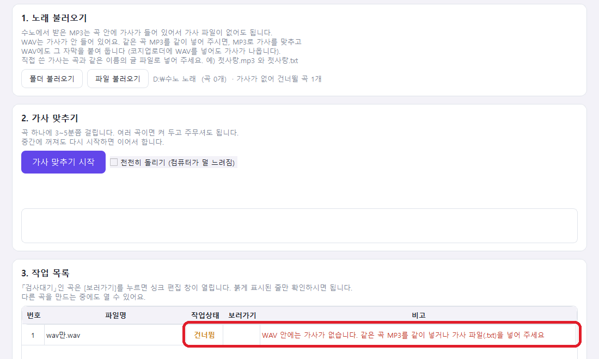
이럴 때는 같은 곡의 MP3를 함께 넣어 주세요. MP3로 자막을 만들고 WAV에도 같은 자막을 붙여 둡니다.
「혹시 이 곡인가요?」 창이 뜰 때 — 전에 자막을 만든 노래와 소리가 거의 같은 노래를 넣으셨다는 뜻입니다. 마스터링한 파일이 보통 이렇습니다.
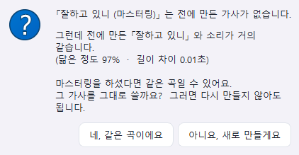
수노의 「목소리만 든 파일」이 있으면 — 노래 옆에 첫사랑 (Vocals).mp3 처럼 목소리만 든 파일을 같이 두시면 곡마다 몇 분씩 빨라집니다. 없어도 괜찮습니다.
5장
프로그램이 만든 자막은 대부분 맞지만, 가끔 조금 일찍 나오거나 늦게 나오는 줄이 있습니다. 그런 줄은 빨간색으로 표시됩니다. 빨간 줄만 들어 보시면 됩니다.
작업 목록에서 보러가기 를 누릅니다. (4장 마지막 사진)
잠시 「준비하고 있어요」가 나온 뒤, 아래 화면이 열립니다.
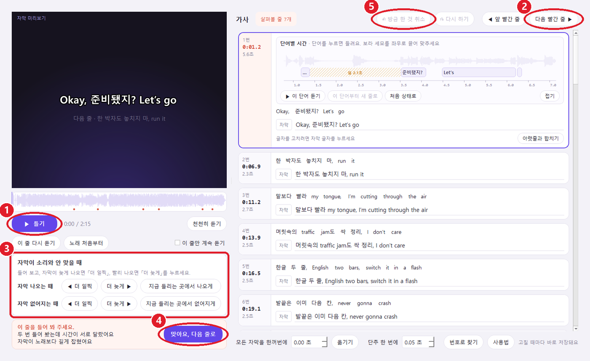
처음 열면 「따라 해 보기」 안내가 나옵니다. 보라색 테두리가 가리키는 단추를 차례로 눌러 보면 됩니다. 필요 없으시면 안내 그만 보기 를 누르세요. 나중에 오른쪽 아래 사용법 에서 다시 볼 수 있습니다.
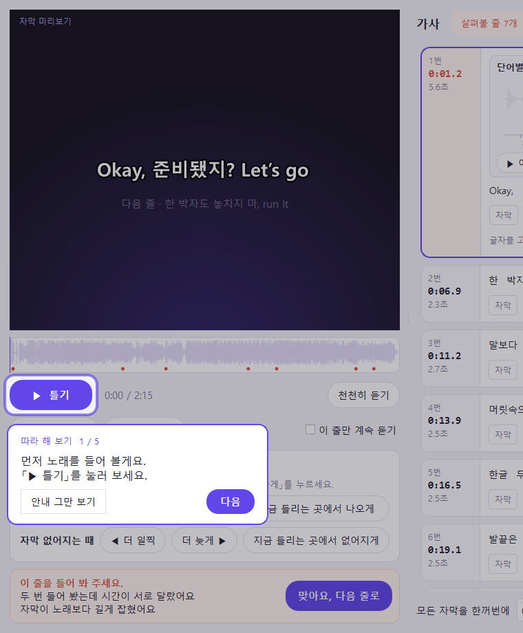
오른쪽 위 다음 빨간 줄 ▶ 을 누릅니다. 살펴볼 줄로 넘어가고, 그 줄이 저절로 한 번 들립니다.
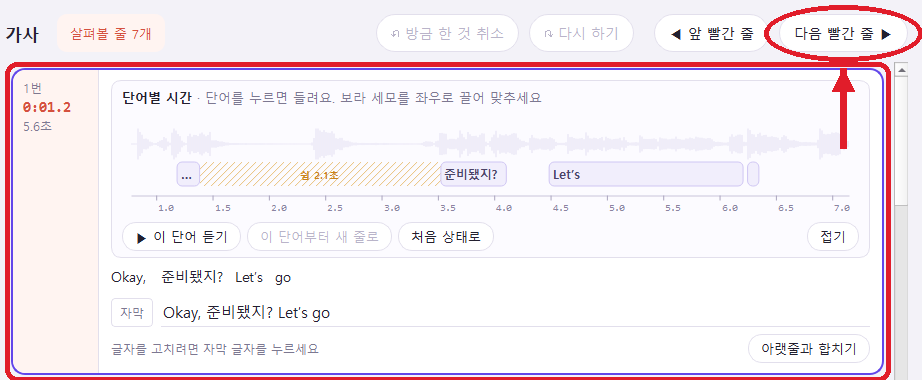
왼쪽 위 화면의 자막을 보면서 노래를 들어 봅니다. 다시 듣고 싶으면 ② 이 줄 다시 듣기 를 누릅니다.
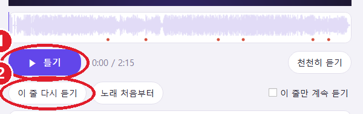
자막이 노래보다 늦게 나오면 ① ◀ 더 일찍, 노래보다 빨리 나오면 ② 더 늦게 ▶ 를 누릅니다. 한 번 누를 때마다 조금씩 움직입니다. 맞을 때까지 여러 번 누르고 들어 보세요.
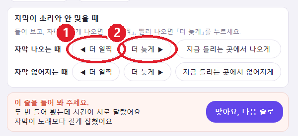
자막이 노래와 맞으면 맞아요, 다음 줄로 를 누릅니다. 빨간 표시가 없어지고 다음 빨간 줄로 넘어갑니다.
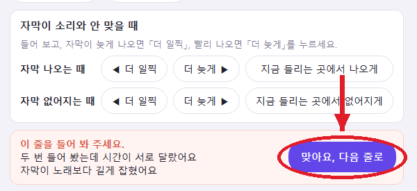
3~4번을 빨간 줄이 없어질 때까지 되풀이합니다. 위쪽에 「다 살펴봤어요」가 나오면 끝입니다. 창을 닫으시면 됩니다.
저장 단추는 따로 없습니다. 단추를 누를 때마다 바로 저장됩니다. 오른쪽 아래에 「저장됨」이라고 나옵니다.
잘못 눌렀으면 오른쪽 위 ↶ 방금 한 것 취소 를 누르세요. 바로 전으로 돌아갑니다.
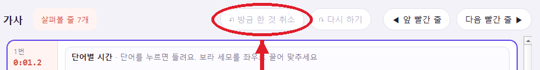
고칠 줄에서 「자막」 옆 글자를 마우스로 누릅니다.
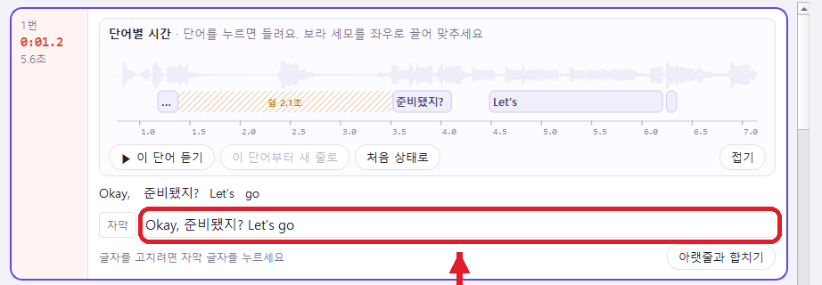
글자를 고칩니다.
키보드의 엔터를 누르면 끝납니다.
고른 줄 오른쪽 아래 아랫줄과 합치기 를 누르면 바로 아랫줄이 이 줄에 붙습니다.
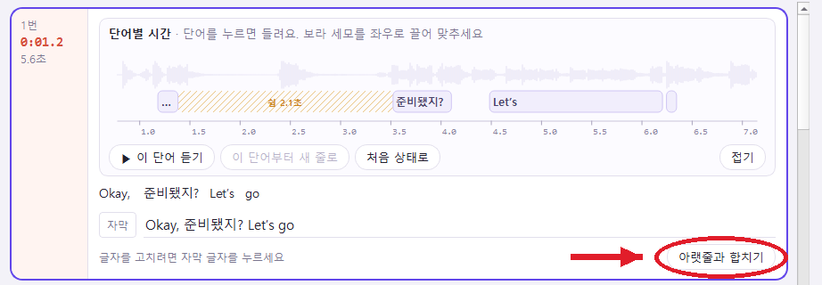
노래 앞부분(전주) 길이 때문에 자막이 통째로 밀렸을 때 — 화면 아래 「모든 자막을 한꺼번에」 칸에 초를 적고 옮기기 를 누르세요. 앞으로 당기려면 빼기(-) 숫자를 적습니다. 예) -1.5
그 밖의 단추는 쓰지 않으셔도 자막을 만드는 데 지장이 없습니다. 단추 위에 마우스를 올려 두면 무슨 단추인지 설명이 나옵니다.
6장
자막은 노래 옆이 아니라 「내 문서」 안의 「코지 가사자막생성기」 → 「결과」 폴더에 모입니다.
첫 화면 아래 ① 결과 폴더 열기 를 누르면 그 폴더가 바로 열립니다.
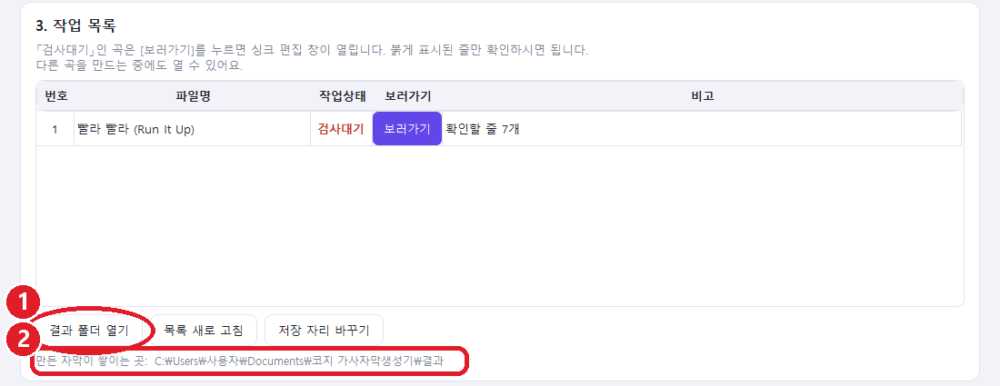
폴더 안에는 노래마다 이런 파일이 생깁니다. 예) 노래 이름이 「첫사랑」이면
첫사랑.srt — 자막 파일. 영상 편집 프로그램이나 유튜브에 올리는 자막은 이것을 쓰시면 됩니다.첫사랑.lrc — 음악 재생기에서 가사가 따라 나오게 하는 파일.json 등)과 _작업중 폴더 — 프로그램이 쓰는 것입니다. 지우거나 옮기지 마세요. 지우면 고치는 화면을 다시 열 수 없고, 코지업로더가 자막을 못 찾습니다.모으는 폴더를 바꾸고 싶으시면 첫 화면 아래 저장 자리 바꾸기 를 누르세요. 전에 만든 자막도 같이 옮길지 물어봅니다. 옮기시려면 Yes 를 누르세요.
코지업로더를 같이 쓰시는 분만
코지업로더가 위 「결과」 폴더를 들여다보고, 영상에 들어가는 노래마다 맞는 자막을 알아서 찾아 붙입니다. 노래 파일을 옮기실 필요는 없습니다.
코지업로더 설정 탭에 「가사 자막」 칸이 보이지 않으면 코지업로더를 새 판으로 업데이트해 주세요.
코지업로더를 켜고 [설정] 탭으로 갑니다.
「가사 자막」 칸에서 폴더 고르기 를 누릅니다.
가사자막생성기의 「결과」 폴더를 고릅니다. (내 문서 → 코지 가사자막생성기 → 결과) 컴퓨터에서 한 번만 하시면 됩니다.
채널의 [초기세팅] 화면을 열고 가사 자막 단추를 누릅니다.
「이 채널 영상에 노래 가사 넣기」에 표시합니다.
글자가 나오는 방법을 고릅니다. 「노래방처럼 차오르기」 또는 「그냥 시간 맞춰 나오기」. 그리고 확인 을 누릅니다.
화면의 「가사」 네모를 끌어서 자리를 정하고 저장합니다. 이제 이 채널 영상에 가사가 들어갑니다.
자막이 없는 노래는 그냥 가사 없이 넘어갑니다. 영상을 만들기 전에 가사자막생성기로 자막을 먼저 만들어 두세요.
마스터링은 자막보다 먼저 해 주세요. 자막을 만든 뒤에 마스터링을 하면 파일이 바뀌어서 코지업로더가 그 노래인 줄 못 알아볼 수 있습니다. 그런 경우 가사자막생성기에 마스터링한 파일을 넣으시면 「혹시 이 곡인가요?」 하고 물어봅니다. 네, 같은 곡이에요 를 누르면 다시 이어집니다.
자막 글자나 시간을 고치는 것은 가사자막생성기에서만 합니다. 코지업로더에서는 글씨 모양과 자리만 정합니다.
7장
곡 하나에 보통 3~5분입니다. 빠른 컴퓨터에서 3분 42초짜리 노래가 약 2분 걸렸습니다. 오래된 컴퓨터는 더 걸릴 수 있습니다. 진행 막대 옆에 「남은 시간 약 ○분」이 나오니 그것을 보시면 됩니다.
맨 처음 한 번은 필요한 자료(한국어 약 2.6GB)를 내려받느라 인터넷 속도에 따라 더 걸립니다.
막대 위 글씨(「노래에서 목소리만 뽑는 중 36%」 같은 것)가 조금씩 바뀌고 있으면 일하는 중입니다. 그대로 두세요. 끄셨더라도 다시 시작하면 이어서 합니다.
키 하나로 컴퓨터 2대까지 쓸 수 있습니다. 다른 컴퓨터에도 설치하고 같은 키를 넣으시면 됩니다. 3대째는 키가 등록되지 않습니다. 컴퓨터를 바꾸셔서 옛 컴퓨터를 빼야 할 때는 문의처로 연락 주세요.
키를 처음 넣은 날부터 1년입니다. 산 날이 아니라 정품 등록을 누른 날부터 셉니다. (평생권은 기간이 없습니다.)
1년권은 첫 화면 왼쪽 아래에 남은 날짜가 나옵니다.
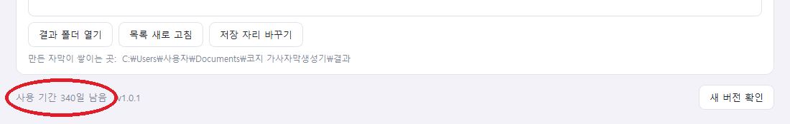
기간이 끝나면 프로그램을 켤 때 「사용 기간이 끝났습니다」가 나옵니다. 만들어 둔 자막 파일은 그대로 남아 있습니다.
처음 키를 넣을 때와 첫 곡을 만들 때는 인터넷이 필요합니다. 그다음에는 인터넷 없이도 됩니다. 다만 며칠에 한 번 키를 다시 확인하므로, 2주 넘게 인터넷을 끊어 두시면 한 번 연결해 달라고 나올 수 있습니다.
가사 글 파일의 줄과 실제 노래가 다르면 잘 안 맞습니다. 가사 파일에 노래에서 부르는 가사만, 부르는 순서대로 넣어 주세요. 빈 줄과 [Verse], [후렴] 같은 대괄호 표시는 프로그램이 알아서 건너뜁니다.
새 판이 나오면 프로그램을 켤 때 「새 버전이 나왔어요」 창이 뜹니다. Yes 를 누르면 알아서 받아 깔립니다. (단추가 영어로 「Yes」라고 나옵니다. 「예」라는 뜻입니다.) 첫 화면 오른쪽 아래 새 버전 확인 으로 직접 확인하실 수도 있습니다.
8장
잘 안 되시거나 궁금한 점은 아래로 연락 주세요.
이 메일(cozy_uploader@naver.com)로 보내 주시거나, 받으신 안내 메일에 답장해 주세요
연락 주실 때 화면 사진을 같이 보내 주시면 훨씬 빨리 도와드릴 수 있습니다. 「도중에 멈췄습니다」가 나왔으면 그 아래 글상자 내용도 같이 보내 주세요.